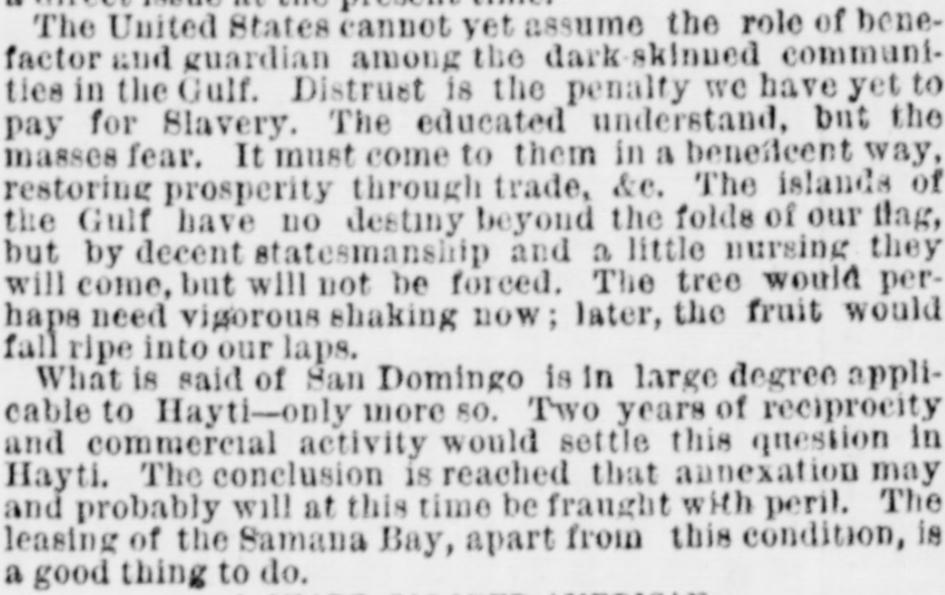
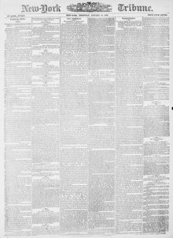

See the full pageVer la página completaThe islands of the Gulf have no destiny beyoud the foldsLas islas del Golfo no tienen destino más allá de los pliegues
The New-York Tribune reported on January 13, 1870, that while the islands of the Gulf and San Domingo naturally gravitated toward the United States through trade and statesmanship, immediate annexation might be fraught with peril, though leasing Samana Bay remained a good idea. The article noted that the U.S. government might encounter competing claims or leases regarding Samana Bay, highlighting a "sharp colored American" mariner who bought land there five years prior and now owns a considerable portion of the available water frontage, coal lands, and valuable property where a naval station would likely be located.El New-York Tribune expuso el 13 de enero de 1870 que, si bien las islas del golfo y Santo Domingo gravitaban de forma natural hacia los Estados Unidos por imperativos mercantiles y geopolíticos, una anexión inmediata entrañaba graves riesgos, considerándose no obstante acertado el arrendamiento de la bahía de Samaná. El escrito prevenía que el gobierno estadounidense podría afrontar títulos contrapuestos o derechos de arriendo en la zona, destacando a un «sagaz marino estadounidense de color» que adquirió tierras allí un lustro antes y retenía una porción considerable de la ribera marítima, terrenos carboníferos y valiosas heredades donde previsiblemente se asentaría el apostadero naval.
FULL TEXT:TRADUCCIÓN:
HOW ANNEXATION WILL BE REGARDED BY THE DOMINICANS.CÓMO SERÁ CONSIDERADA LA ANEXIÓN POR LOS DOMINICANOS.
Within two or three days past, the writer has conversed at length with a gentlemen of the highest character and intelligence, thoroughly acquainted with the condition of both San Domingo and Hayti, and having the best possible means of understanding "the situation." I propose to state some of his views, and preliminary thereto desire to say that my informant is most heartily in sympathy with all honest and equitable efforts at increasing the friendly influence of the United States in the islands of the Gulf, in fact, with all other American peoples. He regards this Government and people as altogether derelict, not only in neighborly duty, but in that careful selfishness which is as usually deemed sagacious among nations as among individuals. He also declares his conviction—and as a native of one of the Antillean islands, he has the right to speak—that the only possible future for these communities lies through complete friendship with the Great Republic, and a control obtained over them by virtue of the energizing and educational influences of our civilization. In this manner he would pave the way to unity with us. Absorption, attraction of gravitation would be either of them a better word than annexation to describe the means by which my West Indian friend would have us obtain control of all the fair islands of the Caribbean Sea.Dentro de los últimos dos o tres días, el escritor ha conversado extensamente con un caballero del más alto carácter e inteligencia, profundamente conocedor de la condición tanto de Santo Domingo como de Haití, y con los mejores medios posibles de entender «la situación». Me propongo exponer algunas de sus opiniones, y previo a ello deseo decir que mi informante simpatiza de todo corazón con todos los esfuerzos honestos y equitativos por aumentar la influencia amistosa de los Estados Unidos en las islas del Golfo, de hecho, con todos los demás pueblos americanos. Considera a este Gobierno y pueblo como totalmente negligentes, no solo en el deber de vecindad, sino en ese cuidadoso egoísmo que suele estimarse como sagaz tanto entre las naciones como entre los individuos. También declara su convicción—y como nativo de una de las islas antillanas, tiene derecho a hablar—de que el único futuro posible para estas comunidades yace a través de la amistad completa con la Gran República, y un control obtenido sobre ellas en virtud de las influencias energizantes y educativas de nuestra civilización. De esta manera abriría el camino hacia la unidad con nosotros. Absorción, atracción de gravitación sería cualquiera de ellas una mejor palabra que anexión para describir los medios por los cuales mi amigo antillano haría que obtuviéramos el control de todas las hermosas islas del Mar Caribe.
From this standpoint he regards favorably a proposition to lease Samana Bay from Baez, or to obtain privileges from Hayti at the Mole St. Nicholas. Any treaty looking to direct annexation he would now regard as sure to produce trouble—and that, too, of a character that must not be underrated.Desde este punto de vista considera favorablemente una proposición para arrendar la Bahía de Samaná a Báez, u obtener privilegios de Haití en el Mole St. Nicholas. Cualquier tratado que mire a la anexión directa lo consideraría ahora como seguro productor de problemas—y ello, además, de un carácter que no debe subestimarse.
The direct reasons given for this view are simple and plain. Distrust of all white races is yet a marked attribute, not of the Haytians only, but the Dominicans also. Perhaps with the latter it is not as distinct a sentiment, but the late attempt of Spain revived and strengthened it. Certainly in Hayti the jealousy of the white man is a fact that must be considered, for it is duly and sedulously fostered by ambitious demagogues. In both Republics the mass of the people are very ignorant, and the intelligence of our great progress in vindicating "all rights for all men," has found its way slowly among them. The presence at Port-au-Prince of Minister Bassett, a gentleman possessed of healthy and honest brown skin, is a visible sign of the change which has been made. Still it is by no means a sufficient proof to them that annexation would not mean evil. The men of Hayti and San Domingo are a proud people. Our negroes, even the best of them, fail to exhibit the pride which is a natural inheritance of those who fought against such terrible odds for personal freedom.Las razones directas que se dan para esta opinión son simples y claras. La desconfianza hacia todas las razas blancas es todavía un atributo marcado, no solo de los haitianos, sino también de los dominicanos. Quizá en estos últimos no es un sentimiento tan distinto, pero el reciente intento de España lo revivió y lo fortaleció. Ciertamente en Haití los celos hacia el hombre blanco son un hecho que debe considerarse, pues son debida y asiduamente fomentados por demagogos ambiciosos. En ambas Repúblicas la masa del pueblo es muy ignorante, y la inteligencia de nuestro gran progreso en reivindicar «todos los derechos para todos los hombres», ha encontrado su camino lentamente entre ellos. La presencia en Puerto Príncipe del ministro Bassett, un caballero poseedor de una piel morena sana y honesta, es un signo visible del cambio que se ha hecho. Aun así, no es en modo alguno una prueba suficiente para ellos de que la anexión no significaría un mal. Los hombres de Haití y Santo Domingo son un pueblo orgulloso. Nuestros negros, aun los mejores de ellos, no exhiben el orgullo que es una herencia natural de quienes lucharon contra tan terribles desventajas por la libertad personal.
In San Domingo, my informant believes that Baez's annexation policy will prove his own overthrow. Even the Samana lease may do it. If we consummate the lease however, the money necessarily expended in preparing the proposed station, and the labor that would be employed, in less than two years would have a marked impression on the people. Prosperity, coming through this means, would rapidly build a bridge for annexation. The petty chieftains would not oppose the United States; on the contrary, seeing that colored men among us had equal rights, their ambition would be fed by the larger fires which flame upon our altar-stones. After two years, occupation of Samana Bay might ensue; peaceful annexation of all San Domingo. It is not at all probable that such would be the case now. My informant declares—and he knows the island and people thoroughly—that if Cabral and Luperon should be able to organize anything like a successful revolt in consequence of an annexation policy, it would take 25,000 men to hold the country and five years' time to conquer it. A thousand men, determined, well equipped and led, might force their way across the island, but except as to the ground which they held by their presence, and perhaps the seacoast, they would have gained nothing. The interior of the island is mountainous, and very easily defensible.En Santo Domingo, mi informante cree que la política anexionista de Báez probará ser su propia ruina. Hasta el arrendamiento de Samaná puede hacerlo. Si consumamos el arrendamiento, sin embargo, el dinero necesariamente gastado en preparar la estación propuesta, y el trabajo que se emplearía, en menos de dos años haría una marcada impresión en el pueblo. La prosperidad, viniendo por este medio, construiría rápidamente un puente para la anexión. Los caudillos menores no se opondrían a los Estados Unidos; por el contrario, viendo que los hombres de color entre nosotros tenían iguales derechos, su ambición se alimentaría con los fuegos mayores que arden sobre nuestras piedras de altar. Después de dos años, podría seguir la ocupación de la Bahía de Samaná; la anexión pacífica de todo Santo Domingo. No es en absoluto probable que tal fuera el caso ahora. Mi informante declara—y conoce la isla y el pueblo profundamente—que si Cabral y Luperón pudieran organizar algo parecido a una revuelta exitosa a consecuencia de una política de anexión, se necesitarían 25,000 hombres para mantener el país y cinco años de tiempo para conquistarlo. Mil hombres, resueltos, bien equipados y dirigidos, podrían abrirse paso a través de la isla, pero excepto en cuanto al terreno que mantuvieran con su presencia, y quizá la costa, no habrían ganado nada. El interior de la isla es montañoso, y muy fácilmente defendible.
THE DOMINICAN LEADERS.LOS JEFES DOMINICANOS.
Gen. Baez is a man of ability and European training. As a politician he is shrewder, craftier perhaps, abler certainly, than his opponents. He is very nearly a statesman, and would make a very respectable Senator from the new State of San Domingo, which is probably a not ill-defined hope in his mind. Like the leaders in both the island Republics, he is counted cruel and unscrupulous. Baez was Salnave's friend through all his earlier struggles, and if the indomitable Haytian has escaped, as is supposed, from Port-au-Prince, he may yet get aid enough from Baez to stir up renewed disorder.El general Báez es un hombre de capacidad y formación europea. Como político es más sagaz, más astuto quizá, más capaz ciertamente, que sus oponentes. Es casi un estadista, y haría un Senador muy respetable del nuevo Estado de Santo Domingo, lo cual es probablemente una esperanza no mal definida en su mente. Como los jefes en ambas Repúblicas de la isla, se le cuenta cruel y sin escrúpulos. Báez fue amigo de Salnave a través de todas sus luchas iniciales, y si el indomable haitiano ha escapado, como se supone, de Puerto Príncipe, aún puede obtener de Báez ayuda suficiente para suscitar un desorden renovado.
Cabral and Luperon are men of lower type than Baez. Neither as soldiers nor politicians have they proved themselves his equals, and yet with such a possible grievance as the transfer of territory and nationality, Cabral is especially capable of making formidable use of the feelings that may easily be aroused. These facts and suggestions are presented as showing difficulties uppermost in my informant's mind; which, in his judgment, ought and may be avoided, by not pressing annexation to a direct issue at the present time.Cabral y Luperón son hombres de tipo inferior a Báez. Ni como soldados ni como políticos se han probado sus iguales, y sin embargo con un agravio tan posible como la transferencia de territorio y nacionalidad, Cabral es especialmente capaz de hacer un uso formidable de los sentimientos que fácilmente pueden excitarse. Estos hechos y sugerencias se presentan como muestra de las dificultades principales en la mente de mi informante; las cuales, a su juicio, deben y pueden evitarse, no presionando la anexión a una cuestión directa en el momento presente.
The United States cannot yet assume the role of benefactor and guardian among the dark-skinned communities in the Gulf. Distrust is the penalty we have yet to pay for Slavery. The educated understand, but the masses fear. It must come to them in a beneficent way, restoring prosperity through trade, &c. The islands of the Gulf have no destiny beyond the folds of our flag, but by decent statesmanship and a little nursing they will come, but will not be forced. The tree would perhaps need vigorous shaking now; later, the fruit would fall ripe into our laps.Los Estados Unidos aún no pueden asumir el papel de benefactor y guardián entre las comunidades de piel oscura en el Golfo. La desconfianza es la penalidad que aún tenemos que pagar por la Esclavitud. Los educados entienden, pero las masas temen. Debe llegar a ellos de manera benéfica, restaurando la prosperidad a través del comercio, etc. Las islas del Golfo no tienen destino más allá de los pliegues de nuestra bandera, pero con una estadista decente y un poco de cuidado vendrán, pero no serán forzadas. El árbol quizá necesitaría una sacudida vigorosa ahora; después, el fruto caería maduro en nuestro regazo.
What is said of San Domingo is in large degree applicable to Hayti—only more so. Two years of reciprocity and commercial activity would settle this question in Hayti. The conclusion is reached that annexation may and probably will at this time be fraught with peril. The leasing of the Samana Bay, apart from this condition, is a good thing to do.Lo que se dice de Santo Domingo es en gran grado aplicable a Haití—solo que más aún. Dos años de reciprocidad y actividad comercial resolverían esta cuestión en Haití. Se llega a la conclusión de que la anexión puede y probablemente estará en este momento cargada de peligro. El arrendamiento de la Bahía de Samaná, aparte de esta condición, es una buena cosa que hacer.
New-York Tribune. New York, January 13, 1870.
See the original at the Library of CongressVer el original en la Biblioteca del Congreso
Published by: New York Tribune, 1866-1924.Publicado por: New York Tribune, 1866-1924.
Edition: Edition 1Edición: edición 1
Page: 1Página: 1
Frequency: daily (1866–1924)Frecuencia: diario (1866–1924)
Collection: Chronicling America, Library of CongressColección: Chronicling America, de la Biblioteca del Congreso
LCCN: sn83030214LCCN: sn83030214
ISSN: 1941-0646ISSN: 1941-0646
OCLC: 9405688OCLC: 9405688
Rights: public domain, according to the Library of CongressDerechos: dominio público, según la Biblioteca del Congreso